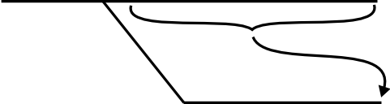

sv: a very simple Subversion wrapper
Rapid overview
Dan Bravender
Who to blame/praise for sv
- Blame me, but praise Luke Opperman and Chad Slaughter, who wrote the scripts that sv imitates. They are probably better than sv will ever be, but they are stuck in a repository at our old job. I didn't want that to happen again, so I took a stab in my free-time.
At my last job we had some very useful subversion wrapper scripts for dealing with branches, but they were at my last job and I was getting really sick of typing:svn merge -r3:HEAD https://sv-subversion.googlecode.com/ svn/branches/well_programmed_feature
sv mergeback well_programmed_feature.
Goals of sv
- Make it easier to work with branches in Subversion
- Tries to make merging branches (not revisions!) a first-order operation
- Rebase (or merge forward) for good, clean branches that:
- Lessen the likelihood of conflicts
- Help you with personal and public code reviews
Most useful commands
create - creates a new branchbranches - list branchesmergeback - merge back to trunk by default (or any other arbitrary branch)switch - switch to latest version of a branchbranchdiff - display a diff from --stop-on-copy to HEAD for the current branchrebase - merge the branch onto a new copy of trunk or any other branch (thebranchname.mergecounter + 1)
Repository Layout Assumptions
- Single project repository - trunk, branches, tags
- Multiple project repository - project_name/trunk, project_name/branches, project_name/tags
- Exceptions can be coded in a configuration file
sv info
$ sv info
sv: svn info --xml
sv: current branch: presentation (https://sv-subversion.googlecode.com/svn/branches/presentation)
sv: svn info
Path: .
URL: https://sv-subversion.googlecode.com/svn/branches/presentation
Repository Root: https://sv-subversion.googlecode.com/svn
Repository UUID: e8798b44-9c37-0410-97f0-e18aaa0e1eb9
Revision: 32
Node Kind: directory
Schedule: normal
Last Changed Author: dan.bravender
Last Changed Rev: 30
Last Changed Date: 2007-09-12 21:41:23 -0500 (Wed, 12 Sep 2007)
sv: using repository layout:
trunk = https://sv-subversion.googlecode.com/svn/trunk
branches = https://sv-subversion.googlecode.com/svn/branches
tags = https://sv-subversion.googlecode.com/svn/tags
$
sv branches
$ sv branches
sv: svn info --xml
sv: current branch: presentation (https://sv-subversion.googlecode.com/svn/branches/presentation)
sv: svn ls --xml https://sv-subversion.googlecode.com/svn/branches
['another_branch',
'another_branch.1',
'class_command',
'dbmigration',
'ignore_modifications',
'presentation',
'sample_branch',
'sample_branch.1',
'setuptools']
sv rebase
sv rebase [trunk or another branch]
- Some tools help you do this, which I believe leads to dirty branches:

sv rebase
$ sv rebase setuptools -i
sv: svn info --xml
sv: current branch: presentation (https://sv-subversion.googlecode.com/svn/branches/presentation)
sv: svn status --xml
sv: svn ls --xml https://sv-subversion.googlecode.com/svn/branches
sv: svn cp https://sv-subversion.googlecode.com/svn/branches/setuptools
https://sv-subversion.googlecode.com/svn/branches/presentation.1
-m "creating branch presentation.1"
sv: svn log -v --stop-on-copy --xml
sv: svn ls --xml https://sv-subversion.googlecode.com/svn/branches
sv: svn switch https://sv-subversion.googlecode.com/svn/branches/presentation.1
D presentation
...
Updated to revision 34.
sv: svn merge -r27:HEAD https://sv-subversion.googlecode.com/svn/branches/presentation
A presentation
...
$
sv switch
$ sv switch presentation -i
sv: svn info --xml
sv: current branch: presentation.1 (https://sv-subversion.googlecode.com/svn/branches/presentation.1)
sv: svn status --xml
sv: svn ls --xml https://sv-subversion.googlecode.com/svn/branches
sv: svn switch https://sv-subversion.googlecode.com/svn/branches/presentation.1
At revision 35.